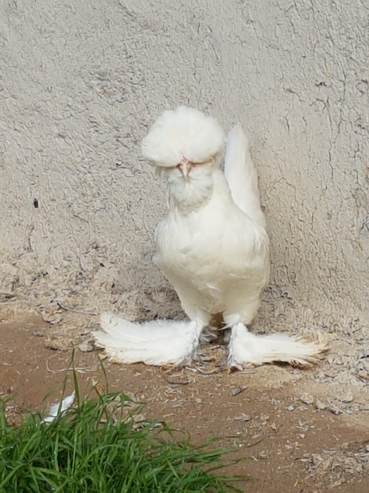

- Sultan Irkı
- 
- Menşei: Türkiye Genel Görünüm: Orta büyüklükte gövdeye sahip, göğüs kafesi kısa ve derin, duruşu neredeyse orta, bol tüylü, tepe tüyleri, sakalı ve bacak tüyleri bol, 5 parmağı var.1-2 kilogram ağırlığındadırlar.İbikleri ''Hilal'' şeklindedir ve iki ucu da eşit uzunlukta olmalıdır.Tepe tüyleri görüş açısına girmemlidir,uzun ve eşit bir şekilde dağılmış olmalıdır.Gagası kısa ve kavislidir.Gözleri kahverengi-kırımızı renklerindedir.Sakalı gagasının altından başlar ve göğsünün 4 parmak kadar üstünde son bulur..Göğüs; Geniş ve belirgin, sırt:Kısa ve kuyruk başlangıcına yumuşak bir kavisle devam eder.Tavuklarda yumurta verimi bulunduğu ortam ve yediği yeme göre değişiklik göstermekle beraber yıllık 70-80 civarı yumurta verdiği söylenebilir.Kuyrukları yüksek kanatları ise biraz daha sarkıktır.5 Parmaklı olması çok önemidir 4 parmak kabul edilemez.Beyaz rengiyle öne çıkan sultan tavuğunun diğer renkler ile ilgili çalışmaları da devam etmektedir.